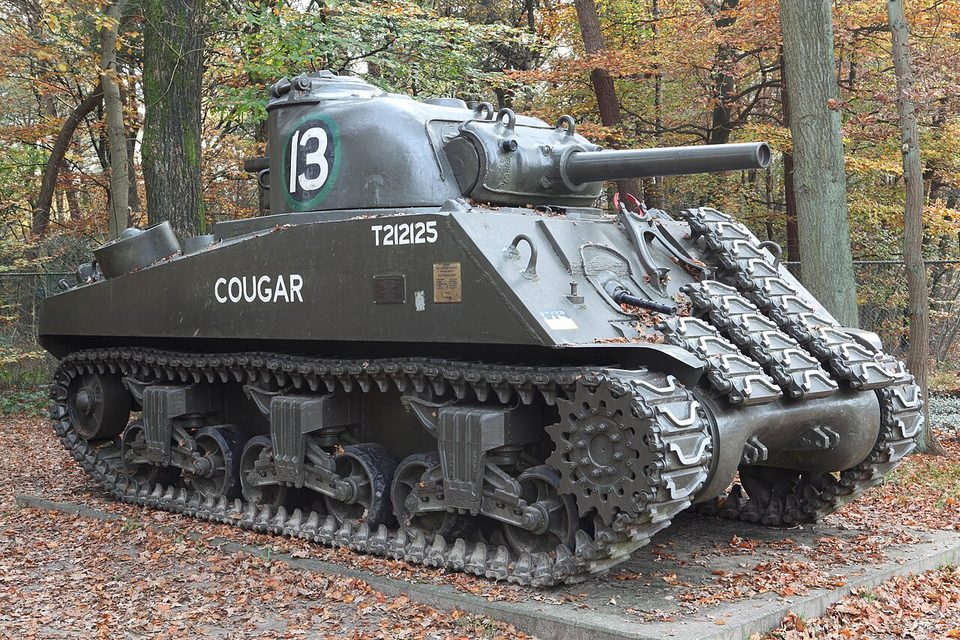
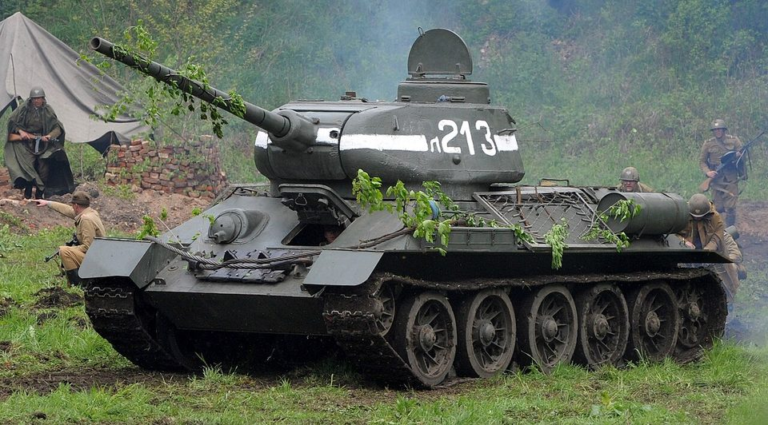

Sherman contra T-34: los dos carros más fabricados de los aliados
Comparativa entre el M4 Sherman y el T-34, los carros que ganaron la guerra por número: diseño, comodidad, armamento y producción.


El Sherman y el T-34 nunca se enfrentaron en la Segunda Guerra Mundial: lucharon en el mismo bando, y la Unión Soviética llegó a recibir miles de Sherman. Juntos suman más de 130.000 unidades fabricadas.
El T-34 era más bajo, con blindaje inclinado, motor diésel y orugas anchas, muy adaptado al barro y la nieve del frente oriental. Su construcción se simplificó al máximo para producir más, a veces a costa del acabado y la comodidad.
El Sherman era más alto y su blindaje menos inclinado, pero ofrecía más espacio, mejor visibilidad, radio en todos los carros y una torreta con giro rápido y estabilizador en elevación. Su fiabilidad mecánica era excelente.
En armamento evolucionaron de forma parecida: el T-34 pasó del cañón de 76 mm al de 85 mm, y el Sherman del de 75 mm al de 76 mm, además de la versión británica Firefly.
En resumen: Dos soluciones distintas para el mismo problema: fabricar muchos carros buenos y fiables. El T-34 era más resistente y móvil en terreno difícil; el Sherman, más cómodo y fácil de mantener.
Datos técnicos lado a lado
| Dato | M4 Sherman | T-34 |
|---|---|---|
| Origen | Estados Unidos | Unión Soviética |
| En servicio | Desde 1942 | Desde 1940 |
| Producidos | 49.234 | 84.070 (35.120 T-34 y 48.950 T-34-85) |
| Peso | 30,3–38,1 t según la variante | 26,5 t (32,4 t el T-34-85) |
| Longitud | 5,84–6,27 m según la variante | 6,68 m |
| Altura | 2,74–2,97 m según la variante | 2,46 m |
| Tripulación | 5 | 4 (5 en el T-34-85) |
| Armamento principal | Cañón M3 de 75 mm; después, cañón M1 de 76 mm u obús de 105 mm | Cañón F-34 de 76,2 mm |
| Armamento secundario | Ametralladora M2 de 12,7 mm y 2 ametralladoras M1919 de 7,62 mm | 2 ametralladoras DT de 7,62 mm |
| Motor | Continental R975 radial de 9 cilindros en los M4 y M4A1; otros motores en el resto de versiones | V-2-34 V12, diésel |
| Potencia | 350–400 CV (R975) | 500 CV |
| Variante de la tabla | — | T-34 con cañón de 76 mm |
| Anchura | — | 3,00 m |
| Blindaje | — | 45 mm inclinado 60° en el frontal del casco |
| Velocidad máxima | — | 53 km/h |
| Autonomía | — | 330 km en carretera |
Datos de las fichas de la enciclopedia. Las fotos, sus autores y sus licencias se indican en cada ficha.